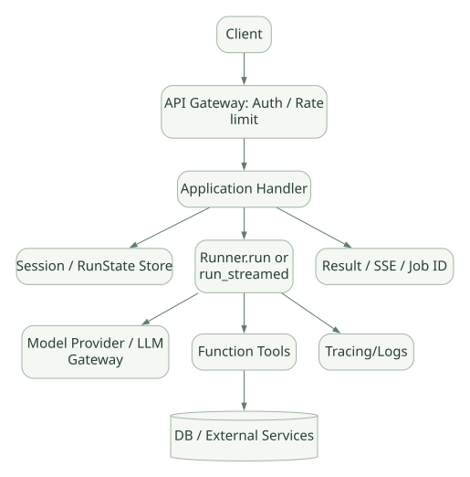
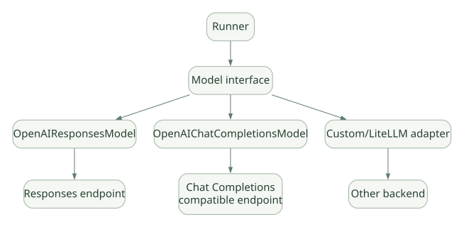

SECOND STUDY / Streaming·Serving·확장
Streaming·Serving·확장
이번 단원의 읽는 관점
이벤트 소비와 실행 수명을 나누고 API·동시성·스케줄러·Adapter·MCP·Sandbox 경계를 읽습니다.
살펴볼 경계마지막 토큰·break·cancel·정리와 외부 작업 완료는 각각 다릅니다.
이 페이지의 세부 목차
Part VII. Streaming, 취소, Serving, 장애 복구
31. Streaming은 토큰 단위 출력만이 아니다#
Runner.run_streamed(...)가 RunResultStreaming을 반환하고, stream_events()를 순회하면 Raw Response Event, RunItem Event, AgentUpdated Event 등의 SDK 이벤트를 구독할 수 있다. Tool 실행·Handoff·중단·최종 저장은 스트림 중간 또는 종료 시점에 발생한다. [DOC: D12]
31.1 가장 중요한 최신 주의사항#
마지막 출력 토큰이 사용자에게 도착했다고 Run이 완전히 종료된 것이 아니다. 세션 저장, 승인 기록, Compaction, 리소스 정리가 이어질 수 있다. 공식 문서는 stream_events()를 끝까지 소비해 비동기 이터레이터가 종료될 때 실행 완료를 판단하라고 설명한다. [DOC: D12]
이것을 놓치면 UI는 완료라고 표시했는데, DB에 대화 기록이 저장되지 않았거나 에러가 소비되지 않는 등의 상태 불일치가 생긴다.
32. 스트리밍 취소: Immediate vs After Turn#
| 동작 | 의미 | 고려할 문제 |
|---|---|---|
cancel() |
즉시 취소 요청 | Tool Cleanup과 외부 부작용이 남을 수 있음 |
cancel(mode="after_turn") |
현재 모델/Tool Turn 마무리 후 중단 | 완료된 Turn의 상태·사용량 반영에 유리하나 작업이 더 진행됨 |
| Stream Iterator 조기 종료 | UI 소비를 멈춤 | 백그라운드 Run이 계속될 수 있음 |
stream_events() 정상 소진 |
Stream 수명 종료 | SDK 정리 완료 기준; 별도 Tool 자원 정리는 추가 확인 가능 |
[DOC: D12] async for에서 break만 했다고 Run이 취소되지는 않는다. 앱이 사용자 연결 끊김을 처리할 때 실행도 멈춰야 한다면 명시적으로 cancel()을 호출하고 후속 정리 흐름을 드레인해야 한다. aclose()만 호출하면 Run을 완료할 때까지 기다릴 수 있다.
32.1 HTTP 연결이 끊겼다면?#
SSE/WebSocket 연결이 끊겼다는 것, Python Task가 취소됐다는 것, Tool 실행이 취소됐다는 것, 외부 API 작업이 원상복구됐다는 것은 각각 다르다. Agent Serving에서는 이 네 경계를 분리해 설계해야 한다.
33. Streaming 코드 경로와 Non-Streaming 비교#
비스트리밍은 AgentRunner._run_impl에서 결과를 반환하기 전의 상태를 정리한다. Streaming은 run_internal/run_loop.py의 start_streaming, _save_stream_items, _finalize_streamed_final_output, _finalize_streamed_interruption 등의 경로에서 이벤트 전송과 상태 저장을 관리한다. [SRC: S01, S02]
이 차이 때문에 안전성 관련 수정 시 비스트리밍 테스트만 통과하는 구현은 부족하다. 모델 호출 이벤트 시작/끝, Tool Output, 최종 Guardrail, 취소, 오류 전파가 두 경로에서 의미상 정합적인지 검증해야 한다.
34. HTTP 서버에서 Agent를 서빙하는 구조#
가로로 이동해서 읽을 수 있습니다. 도식 크게 보기 ↗

원문의 학습용 도식입니다. 연결 방향·분기 조건·점선·쌍방향 연결을 보존해 세로로 배치했습니다. 실제 구현·의사코드·해석의 구분은 본문을 함께 읽으세요.
도식 원문 보기 (Mermaid)
flowchart TD
U[Client] --> A[API Gateway: Auth / Rate limit]
A --> B[Application Handler]
B --> C[Session / RunState Store]
B --> D[Runner.run or run_streamed]
D --> E[Model Provider / LLM Gateway]
D --> F[Function Tools]
F --> G[(DB / External Services)]
D --> H[Tracing/Logs]
B --> I[Result / SSE / Job ID]SDK는 이 구조에서 D 부분을 도와주지만 A·B·C의 모든 운영 기능과 G의 데이터 권한까지 제공하는 것은 아니다.
34.1 동기 처리형 요청#
- 클라이언트 요청 동안 서버 Handler가 Run을 기다린다.
- 최종 결과를 한 번에 반환한다.
- 짧은 분석에 간단하지만 HTTP Timeout, 연결 끊김, 리버스 프록시 제한에 주의해야 한다.
34.2 SSE 스트리밍#
- 비동기
run_streamed이벤트를 UI에 전달한다. - 사용자에게 진행 상황을 보여줄 수 있다.
- 연결 끊김 시 소비자와 실제 Run의 수명을 별도 관리해야 한다.
34.3 작업 큐 기반 비동기 실행#
- API는 작업을 수락하고
job_id를 반환한다. - 별도 Worker에서
Runner.run을 실행한다. - 앱 DB에 RunState/상태 전이를 기록하고 완료·실패를 조회하거나 알림한다.
- 큐 중복 수신, Worker 재시작, Tool Idempotency 정책은 앱이 설계한다.
중요: 이 세 Serving 패턴은 SDK가 제공하는 완제품이 아니라 SDK 위에 구현할 수 있는 애플리케이션 아키텍처다. [INF]
35. 여러 사용자가 동시에 요청하면?#
- 동일 Agent 정의를 공유하는 것과 사용자별 Session을 공유하는 것은 별개.
- 인증 사용자 ID와 Session ID의 접근 통제는 앱이 강제해야 함.
- 공유 Tool 객체가 가변 Cache/Connection/파일을 갖는다면 동시성 검토가 필요.
- 동일 Session에 두 Run이 동시에 쓰면 순서가 섞일 수 있음. Session Backend별 일관성 정책 확인.
max_turns는 테넌트별 Rate Limit/동시 실행 상한을 대체하지 않음.- 외부 API Provider 할당량, Tool별 DB Connection Pool, 모델 서비스 Rate Limit을 합산해서 설계해야 함.
36. 장기 실행 워크플로·Cron은 내장됐는가?#
Hermes처럼 Agent 자체에 사용자용 Cron 기능이 포함된 완성형 애플리케이션과 달리, Agents SDK의 일반 Runner는 모델 요청을 받은 뒤 실행하는 SDK 엔진이다.
Cron/주기 스케줄링, 메시지 큐, 사용자 알림, 실행 이력 대시보드를 원한다면 일반적으로 애플리케이션 또는 외부 스케줄러가 Runner를 호출한다. Sandbox 확장·전용 통합(예: 별도 Workflow Runtime) 등이 제공되어도 단순 Runner에 Cron Daemon이 자동 포함되어 있다고 해석하지 말 것.
Cron이 유용한가? 반복 리포트, 점검/요약 같은 업무에는 유용할 수 있다. 다만 사용자·조직 데이터 권한, Scheduler 장애, 실패 재실행의 중복 부작용, 자동 실행 횟수 통제를 추가로 설계해야 한다. 이번 문서는 데모 설계를 다루지 않는다.
37. Model Adapter 및 LLM Gateway: OpenAI API가 필수인가?#
아니다. SDK의 Model 인터페이스를 만족하는 제공자 또는 OpenAI 호환 Adapter를 활용할 수 있다. 공식적으로 OpenAIResponsesModel과 OpenAIChatCompletionsModel을 제공하고, LiteLLM 등 별도 경로도 있다. [DOC: D13]
가로로 이동해서 읽을 수 있습니다. 도식 크게 보기 ↗

원문의 학습용 도식입니다. 연결 방향·분기 조건·점선·쌍방향 연결을 보존해 세로로 배치했습니다. 실제 구현·의사코드·해석의 구분은 본문을 함께 읽으세요.
도식 원문 보기 (Mermaid)
flowchart LR
A[Runner] --> B[Model interface]
B --> C[OpenAIResponsesModel]
B --> D[OpenAIChatCompletionsModel]
B --> E[Custom/LiteLLM adapter]
C --> F[Responses endpoint]
D --> G[Chat Completions compatible endpoint]
E --> H[Other backend]37.1 vLLM/SGLang 연결 가능성과 검증 포인트#
로컬/사내 vLLM 또는 SGLang 서버가 OpenAI 호환 API를 제공하면 연결을 시도할 수 있지만, 필드와 기능의 실제 호환성은 별도다.
- Function Calling JSON 형식과
tool_choice지원. - Parallel Tool Call 지원 여부 및 변형.
- Structured Output/JSON Schema의 엄격성.
- Streaming Chunk를 SDK가 해석할 수 있는지.
- Tool Call ID 및 reasoning 항목 처리.
response_id/ server conversation 상태 지원 여부.- Prompt Cache 및 Usage 통계 지원.
API 모양이 유사하다는 이유로 Hosted Search, Compaction, Computer Use, Hosted MCP 등의 기능도 자동 동일 지원한다고 설명하면 안 된다.
38. MCP와 Plugin, Skills의 차이#
| 개념 | 본질 | 실행·소유 경계 |
|---|---|---|
| Function Tool | SDK의 Python Callable | 사용자 앱 프로세스/워커 |
| MCP Tool | 표준 프로토콜로 노출되는 기능 | 별도의 MCP 서버 및 연결 Transport |
| Hosted MCP Tool | 모델 플랫폼이 MCP 도구를 호출하는 경로 | Hosted provider + MCP 서버 |
| Plugin | 여러 Tool·설정·자산을 묶는 제품별 배포 단위(일반 개념) | 해당 플랫폼 구현에 따라 다름 |
| Skill | 재사용 가능한 작업 지침·자산·절차(제품별 형식) | 선택·로딩·실행 방식이 플랫폼마다 다름 |
| Sandbox Capability | 격리 환경에 특정 Tool/파일/기능을 부여 | SDK Sandbox 런타임과 Backend |
MCP와 Plugin은 같은 말이 아니다. MCP는 상호운용 도구/컨텍스트 인터페이스를 규정하는 프로토콜이고 Plugin은 특정 제품의 확장 패키징 관례일 수 있다. SDK는 다양한 Tool과 MCP 서버를 연결하지만 Hermes/Claude Code의 Plugin 및 Skill 관리 모델과 완전히 동일한 기능을 기본 Runner가 제공한다고 가정해서는 안 된다.
38.1 MCP 통신 종류#
공식 MCP 문서는 MCPServerStdio, MCPServerSse, MCPServerStreamableHttp, HostedMCPTool을 구분한다. 신뢰 가능한 서버만 사용하고, 필요 도구만 필터링하며, 원격 서버에 제공하는 Credentials 범위를 최소화하라고 안내한다. [DOC: D14]
38.2 MCP 사용 시 공개할 Tool 목록도 보안이다#
Tool 이름과 설명만 보고 모델이 필요한 일을 할 수 있어도, 호출 자격증명·서버 경로·실제 데이터 권한은 별도다. 이름 충돌 방지를 위한 Tool 네이밍, Static/Dynamic Filter, Approval, RPC Timeout을 고려해야 한다.